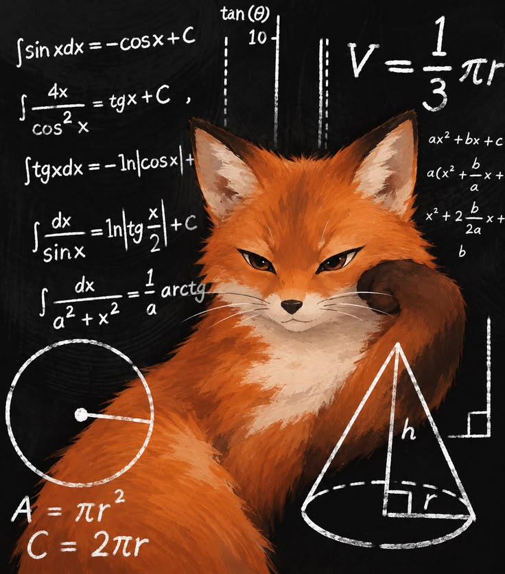
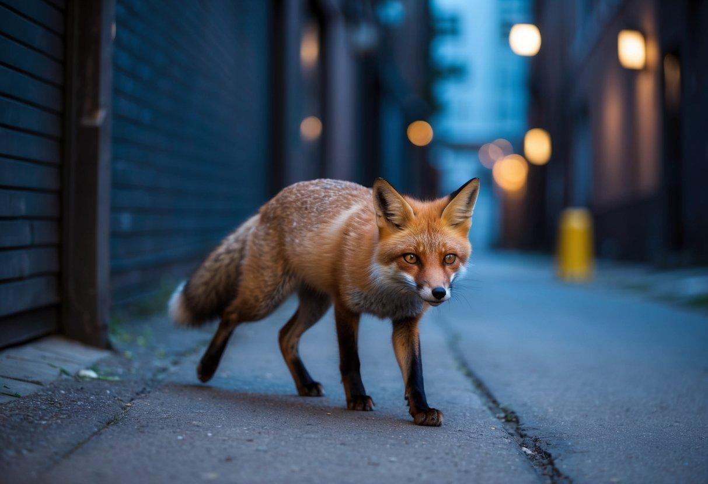
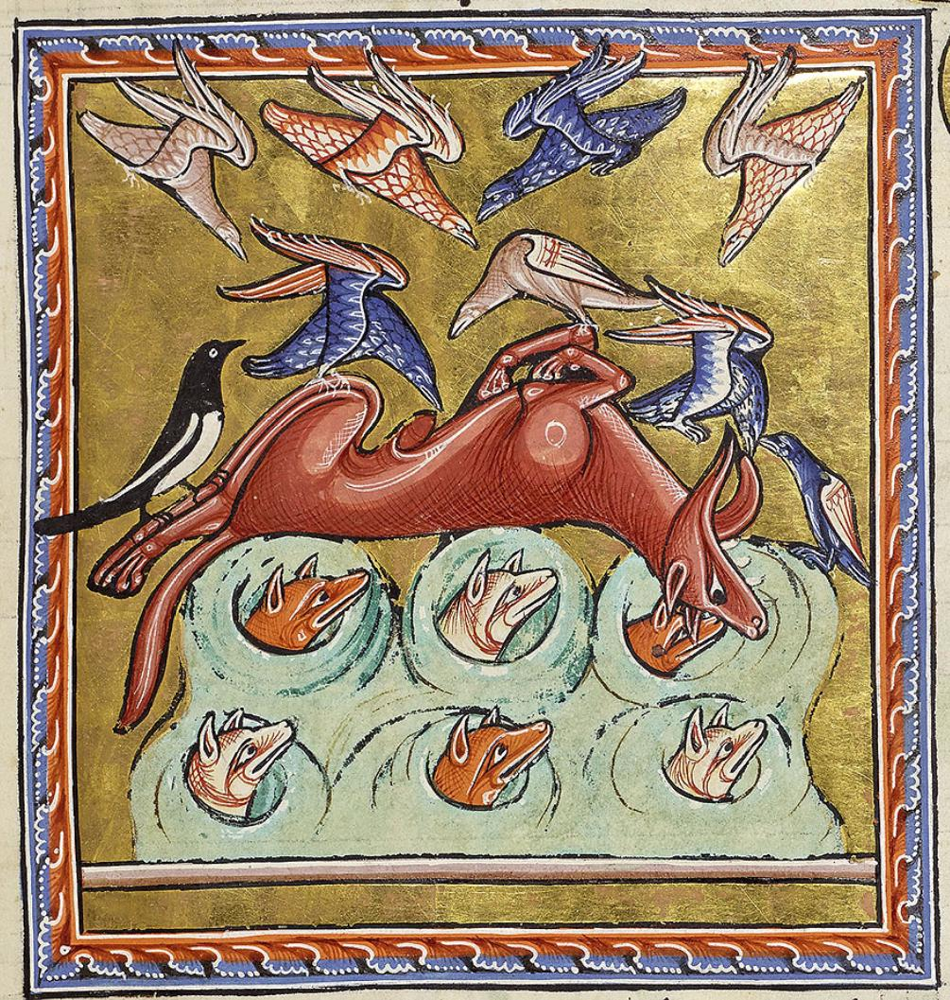

УЛИКА № 01
Лиса — профессиональный манипулятор
Во многих сказках лиса — хитрый персонаж, способный обвести вокруг пальца других.
Многовековая информационная кампания. Репутация «хитрой, но безобидной» — идеальное прикрытие.
НЕ ВЫКЛЮЧАЙТЕ ЭКРАН
Досье о возможной скрытой структуре влияния, которая уже слишком глубоко проникла в человеческую культуру.
ПРЕДУПРЕЖДЕНИЕ: дальнейший просмотр может вызвать необоснованное подозрение к рыжим хвостам.

Во многих сказках лиса — хитрый персонаж, способный обвести вокруг пальца других.
Многовековая информационная кампания. Репутация «хитрой, но безобидной» — идеальное прикрытие.

Лисы приспосабливаются к жизни рядом с людьми и встречаются в крупных городах.
Дороги, парки, тоннели и мусорные контейнеры — готовая сеть снабжения. Они здесь давно.
Видео с лисами регулярно появляются в соцсетях и превращаются в мемы.
Каждый лайк — добровольный взнос в развитие лисьего влияния. Мы сами их продвигаем.
Лисы наблюдают за окружающей средой и быстро реагируют на происходящее.
Взгляд аудитора, который знает, что вы опять не выполнили квартальный план.

Образ лисы встречается в мифологии разных народов. В японском синтоизме лисы связаны с культом Инари.
Что, если древние люди договаривались не с символом, а с теми, кто за ним стоял?
Установить природу устойчивого положительного отношения граждан к представителям рода Vulpes.
— Объект вызывает у наблюдателей непропорционально высокий уровень умиления.
— Попытки объяснить поведение объекта словами «просто животное» признаны недостаточными.
— Установлено: после просмотра изображения лисы субъект склонен показывать его другим субъектам.
— Особую опасность представляет хвост. Его назначение официально объясняется вопросами баланса и коммуникации, однако данная версия требует дальнейшей проверки.
* Документ, ведомство и выводы вымышлены. Секретность распространяется даже на автора.
Скрытое общество существует параллельно человеческому. Их коммуникация настолько сложна, что мы принимаем её за обычное поведение животных.
Почему нет ежедневных экстренных заявлений? Возможно, существует секретное соглашение: люди пользуются планетой, пока не мешают лисам.
В этой вымышленной версии рекомендации соцсетей — инструмент распространения влияния, а каждое видео захватывает ещё немного нашего внимания.
СОВПАДЕНИЙ СЛИШКОМ МНОГО. ИЛИ НАМ ТАК КАЖЕТСЯ?
Мы провели абсолютно подозрительный опрос. Ответы заставляют задуматься. Методология — засекречена.
* Шуточные, выдуманные показатели для презентации. Это не результаты реального опроса.
* График нарисован для драматического эффекта. Научная ценность: отсутствует.
ОНИ УЖЕ ПОБЕДИЛИ